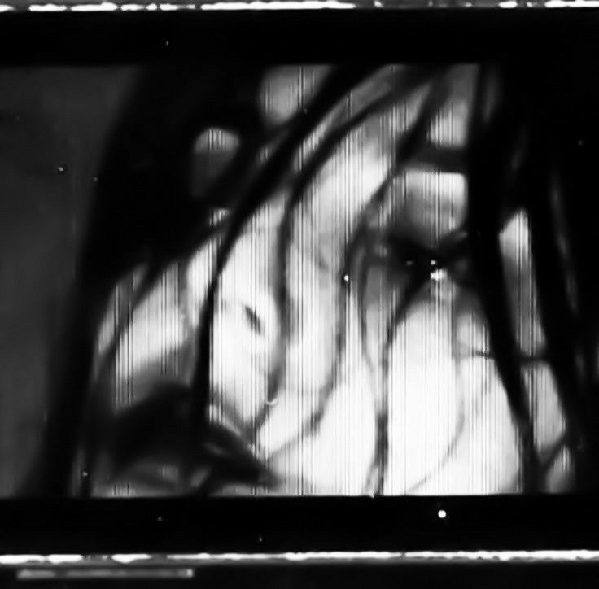

𝐖𝐞𝐥𝐜𝐨𝐦𝐞 𝐭𝐨 𝐦𝐲 𝐟𝐢𝐫𝐬𝐭 𝐞𝐯𝐞𝐫 𝐛𝐥𝐨𝐠!!!

𝖠𝗌 𝗎 𝖼𝖺𝗇 𝗌𝖾𝖾 𝖨 𝖽𝗈𝗐𝗇𝗅𝗈𝖺𝖽 𝖺 𝗅𝗈𝗍 𝗈𝖿 𝗉𝗁𝗈𝗍𝗈𝗌 𝖿𝗋𝗈𝗆 𝖯𝗂𝗇𝗍𝖾𝗋𝖾𝗌𝗍 𝖺𝗇𝖽 𝗍𝗐𝗂𝗍𝗍𝖾𝗋.
𝖲𝗈 𝗇𝗈𝗐 𝗂𝗍 𝖻𝖾𝗀𝗂𝗇𝗌...
𝖨 𝗐𝖺𝗌 𝗋𝗈𝗅𝗅𝗂𝗇𝗀 𝖺𝗋𝗈𝗎𝗇𝖽 𝗂𝗇 𝗆𝗒 𝖻𝖾𝖽 𝗅𝖺𝗌𝗍 𝗇𝗂𝗀𝗁𝗍 𝗐𝗁𝖾𝗇 𝖨 𝖿𝗂𝗋𝗌𝗍 𝗌𝗍𝖺𝗋𝗍𝖾𝖽 𝗐𝗈𝗋𝗄𝗂𝗇𝗀 𝗈𝗇
𝗍𝗁𝗂𝗌 𝖻𝗅𝗈𝗀 𝖻𝖾𝖼𝖺𝗎𝗌𝖾 𝖨 𝗐𝖺𝗌 𝗌𝗈 𝖾𝗑𝖼𝗂𝗍𝖾𝖽 𝖺𝖻𝗈𝗎𝗍 𝖺𝗅𝗅 𝗍𝗁𝖾 𝗉𝗈𝗌𝗌𝗂𝖻𝗂𝗅𝗂𝗍𝗂𝖾𝗌 𝖿𝗈𝗋 𝖾𝗑𝗉𝗋𝖾𝗌𝗌𝗂𝗈𝗇 𝗂𝗍 𝗐𝗈𝗎𝗅𝖽 𝗉𝗋𝗈𝗏𝗂𝖽𝖾.
𝖨 𝖿𝗋𝖾𝗊𝗎𝖾𝗇𝗍𝗅𝗒 𝖿𝖾𝖾𝗅 𝖺𝗌 𝗂𝖿 𝗍𝗁𝖾𝗋𝖾 𝗂𝗌 𝗌𝗈 𝗆𝗎𝖼𝗁 𝗀𝗈𝗂𝗇𝗀 𝗈𝗇 𝗂𝗇 𝗆𝗒 𝗁𝖾𝖺𝖽 𝖺𝗇𝖽 𝗁𝖾𝖺𝗋𝗍 𝗍𝗁𝖺𝗍 𝗍𝗁𝖾 𝗈𝗇𝗅𝗒 𝗐𝖺𝗒 𝖿𝗈𝗋 𝗆𝖾 𝗍𝗈
𝗌𝗎𝗋𝗏𝗂𝗏𝖾 𝗂𝗌 𝗍𝗈 𝗉𝗎𝗋𝗀𝖾 𝗂𝗍 𝗈𝗎𝗍 𝖺𝗇𝖽 𝗋𝖾𝗅𝖾𝖺𝗌𝖾 𝗂𝗍 𝗂𝗇𝗍𝗈 𝗍𝗁𝖾 𝗏𝖺𝗌𝗍 𝖾𝗆𝗉𝗍𝗂𝗇𝖾𝗌𝗌 𝗈𝖿 𝗍𝗁𝖾 𝗐𝗈𝗋𝗅𝖽,
𝗐𝗁𝗂𝖼𝗁 𝗂𝗌 𝗉𝗋𝗈𝖻𝖺𝖻𝗅𝗒 𝗐𝗁𝗒 𝖨 𝗈𝗏𝖾𝗋𝗌𝗁𝖺𝗋𝖾 𝖻𝗈𝗍𝗁 𝗈𝗇𝗅𝗂𝗇𝖾 𝖺𝗇𝖽 𝗂𝗇 𝗋𝖾𝖺𝗅 𝗅𝗂𝖿𝖾.
𝖬𝖺𝗄𝗂𝗇𝗀 𝗒𝗈𝗎𝗋 𝖽𝖾𝖾𝗉𝖾𝗌𝗍, 𝗆𝗈𝗌𝗍 𝗂𝗇𝗇𝖾𝗋 𝗍𝗁𝗈𝗎𝗀𝗁𝗍𝗌 𝗉𝗎𝖻𝗅𝗂𝖼 𝖿𝗋𝖾𝖾𝗌 𝗒𝗈𝗎 𝗂𝗇 𝖺 𝗐𝖺𝗒 𝗍𝗁𝖺𝗍 𝗌𝗂𝗆𝗉𝗅𝗒 𝗍𝗁𝗂𝗇𝗄𝗂𝗇𝗀
𝖺𝖻𝗈𝗎𝗍 𝗍𝗁𝖾𝗆 𝖻𝖾𝖼𝖺𝗎𝗌𝖾 𝗐𝗋𝗂𝗍𝗂𝗇𝗀 𝗍𝗁𝖾𝗆 𝖽𝗈𝗐𝗇 𝗂𝗇 𝖺 𝗉𝗋𝗂𝗏𝖺𝗍𝖾 𝗃𝗈𝗎𝗋𝗇𝖺𝗅 𝖽𝗈𝖾𝗌 𝗇𝗈𝗍.
𝖴𝗇𝗅𝗂𝗄𝖾 𝗆𝗒 𝗌𝗂𝖻𝗅𝗂𝗇𝗀𝗌, 𝖨 𝖽𝗂𝖽 𝗇𝗈𝗍 𝗄𝖾𝖾𝗉 𝖺 𝗅𝗈𝗍 𝗈𝖿 𝗃𝗈𝗎𝗋𝗇𝖺𝗅𝗌 𝗌𝗂𝗇𝖼𝖾 𝖨 𝗐𝖺𝗌 𝖺 𝗄𝗂𝖽.
𝖶𝗂𝗍𝗁 𝗇𝗈𝗍𝗁𝗂𝗇𝗀 𝖻𝖾𝗍𝗍𝖾𝗋 𝗍𝗈 𝖽𝗈 𝖾𝗑𝖼𝖾𝗉𝗍 𝗌𝗅𝖾𝖾𝗉, 𝗅𝗂𝗌𝗍𝖾𝗇 𝗍𝗈 𝗆𝗎𝗌𝗂𝖼, 𝗈𝗋 𝖾𝖺𝗍.
𝖬𝗈𝗌𝗍 𝗈𝖿 𝗍𝗁𝖾𝗌𝖾 𝗍𝗁𝗂𝗇𝗀𝗌 𝗐𝖾𝗋𝖾 𝗃𝗎𝗌𝗍 𝗆𝗒 𝗂𝗇𝗇𝖾𝗋 𝖼𝗈𝗇𝖿𝗎𝗌𝗂𝗇𝗀 𝗍𝗁𝗈𝗎𝗀𝗁𝗍𝗌 𝗐𝗋𝗂𝗍𝗍𝖾𝗇 𝖽𝗈𝗐𝗇 𝗈𝗋
(𝖼𝗈𝗅𝗅𝖾𝗀𝖾 𝖺𝗇𝖽 𝗍𝗈-𝖽𝗈 𝗅𝗂𝗌𝗍𝗌) 𝗍𝗁𝖺𝗍 𝗐𝖾𝗋𝖾 𝗆𝖾𝗌𝗌𝗒 𝖺𝗇𝖽 𝗂𝗇𝖼𝗈𝗆𝗉𝗋𝖾𝗁𝖾𝗇𝗌𝗂𝖻𝗅𝖾,
𝖻𝗎𝗍 𝗐𝗁𝖺𝗍 𝖾𝗅𝗌𝖾 𝗐𝗈𝗎𝗅𝖽 𝗒𝗈𝗎 𝖾𝗑𝗉𝖾𝖼𝗍 𝖿𝗋𝗈𝗆 𝖺 𝗍𝖾𝖾𝗇𝖺𝗀𝖾 𝗀𝗂𝗋𝗅?
𝖤𝗏𝖾𝗇 𝖺𝖿𝗍𝖾𝗋 𝖨 𝗌𝗍𝗈𝗉𝗉𝖾𝖽 𝗐𝗋𝗂𝗍𝗂𝗇𝗀 𝗂𝗇 𝗉𝗋𝗂𝗏𝖺𝗍𝖾 𝗌𝗉𝖺𝖼𝖾𝗌,
𝖨 𝖿𝖾𝗅𝗍 𝗂𝗍 𝗐𝖺𝗌 𝗇𝖾𝖼𝖾𝗌𝗌𝖺𝗋𝗒 𝗍𝗈 𝖼𝗅𝖾𝖺𝗋 𝗆𝗒 𝗆𝗂𝗇𝖽 𝖻𝖾𝖼𝖺𝗎𝗌𝖾 𝗍𝗁𝗂𝗇𝗀𝗌 𝗌𝖾𝖾𝗆𝖾𝖽 𝖼𝗅𝖾𝖺𝗋𝖾𝗋
𝗐𝗁𝖾𝗇 𝖨 𝗐𝖺𝗌 𝗌𝗉𝖾𝖺𝗄𝗂𝗇𝗀 𝗍𝗈 𝗌𝗈𝗆𝖾 𝖺𝖻𝗌𝗍𝗋𝖺𝖼𝗍 𝖾𝗑𝗍𝖾𝗋𝗇𝖺𝗅 𝖿𝗂𝗀𝗎𝗋𝖾.
𝖱𝖺𝗍𝗁𝖾𝗋 𝗍𝗁𝖺𝗇 𝖺 𝗆𝗂𝗌𝗁𝗆𝖺𝗌𝗁 𝗈𝖿 𝗁𝖺𝗅𝖿-𝖼𝗈𝗆𝗉𝗅𝖾𝗍𝖾𝖽 𝗍𝗁𝗈𝗎𝗀𝗁𝗍𝗌,
𝖨'𝗆 𝖺𝖻𝗅𝖾 𝗍𝗈 𝗍𝗂𝖾 𝗍𝗁𝗈𝗌𝖾 𝗍𝗁𝗈𝗎𝗀𝗁𝗍𝗌 𝗍𝗈𝗀𝖾𝗍𝗁𝖾𝗋 𝗂𝗇𝗍𝗈 𝖺 𝖿𝗂𝗇𝖺𝗅 𝗂𝖽𝖾𝖺.
𝖨𝗍 𝖿𝖾𝖾𝗅𝗌 𝗌𝖺𝗍𝗂𝗌𝖿𝗒𝗂𝗇𝗀 𝖺𝗌 𝗐𝖾𝗅𝗅 𝖺𝗌 𝗂𝗇𝖿𝗈𝗋𝗆𝖺𝗍𝗂𝗏𝖾, 𝖺𝗌 𝗂𝖿 𝖨'𝗆 𝗅𝖾𝖺𝗋𝗇𝗂𝗇𝗀 𝗆𝗈𝗋𝖾 𝗇𝗈𝗍 𝗈𝗇𝗅𝗒
𝖺𝖻𝗈𝗎𝗍 𝗆𝗒𝗌𝖾𝗅𝖿 𝖻𝗎𝗍 𝖺𝗅𝗌𝗈 𝖺𝖻𝗈𝗎𝗍 𝗍𝗁𝖾 𝗐𝗈𝗋𝗅𝖽. 𝖳𝗁𝖺𝗍'𝗌 𝗉𝗋𝗈𝖻𝖺𝖻𝗅𝗒 𝗐𝗁𝗒 𝖨
𝗌𝗍𝖺𝗋𝗍𝖾𝖽 𝖿𝗂𝗅𝗅𝗂𝗇𝗀 𝗆𝗒 𝖨𝗇𝗌𝗍𝖺𝗀𝗋𝖺𝗆 𝗌𝗍𝗈𝗋𝗂𝖾𝗌 𝗐𝗂𝗍𝗁 𝗂𝗇𝗇𝖾𝗋 𝗍𝗁𝗈𝗎𝗀𝗁𝗍𝗌 𝖺𝗇𝖽 𝗂𝖽𝖾𝗇𝗍𝗂𝗍𝗒 𝖼𝗋𝗂𝗌𝗂𝗌 𝗋𝖺𝗆𝖻𝗅𝗂𝗇𝗀𝗌.
𝖳𝗁𝗂𝗌 𝗂𝗌 𝗐𝗁𝖾𝗋𝖾 𝗍𝗁𝗂𝗌 𝖻𝗅𝗈𝗀 𝖼𝗈𝗆𝖾𝗌 𝗂𝗇. 𝖨 𝖾𝗇𝗃𝗈𝗒 𝗐𝗋𝗂𝗍𝗂𝗇𝗀 𝗇𝗈𝗐,
𝖻𝗎𝗍 𝗍𝗁𝖾 𝖨𝖦 𝖿𝗈𝗋𝗆𝖺𝗍 𝗉𝗋𝖾𝗏𝖾𝗇𝗍𝗌 𝗆𝖾 𝖿𝗋𝗈𝗆 𝗐𝗋𝗂𝗍𝗂𝗇𝗀 𝗍𝗁𝖾𝗌𝖾 𝖻𝗅𝗈𝗀 𝗉𝗂𝖾𝖼𝖾𝗌 𝗍𝗁𝖺𝗍 𝗆𝖺𝗄𝖾 𝗆𝖾 𝖿𝖾𝖾𝗅 𝖺𝖼𝖼𝗈𝗆𝗉𝗅𝗂𝗌𝗁𝖾𝖽.
𝖳𝗁𝖾𝗋𝖾'𝗌 𝗌𝗈 𝗆𝗎𝖼𝗁 𝖨 𝗐𝖺𝗇𝗍 𝗍𝗈 𝗌𝖺𝗒 𝖺𝗇𝖽 𝗌𝗁𝖺𝗋𝖾,
𝖺𝗇𝖽 𝖺 15 𝗌𝖾𝖼𝗈𝗇𝖽 𝗌𝗍𝗈𝗋𝗒 𝗐𝗈𝗇'𝗍 𝖺𝗅𝗅𝗈𝗐 𝗆𝖾 𝗍𝗈 𝖾𝗑𝗉𝗋𝖾𝗌𝗌 𝖾𝗏𝖾𝗋𝗒𝗍𝗁𝗂𝗇𝗀 𝗍𝗁𝖾 𝗐𝖺𝗒 𝖨 𝗐𝖺𝗇𝗍 𝗍𝗈.
𝖤𝗏𝖾𝗇 𝗂𝖿 𝗆𝗒 𝗐𝗋𝗂𝗍𝗂𝗇𝗀 𝗈𝗇 𝗍𝗁𝗂𝗌 𝖻𝗅𝗈𝗀 𝗂𝗌 𝖺 𝗅𝗂𝗍𝗍𝗅𝖾 𝖼𝗈𝗇𝖿𝗎𝗌𝗂𝗇𝗀,
𝖨 𝖿𝖾𝖾𝗅 𝗅𝗂𝗄𝖾 𝖨'𝗏𝖾 𝖿𝗂𝗇𝖺𝗅𝗅𝗒 𝖿𝗈𝗎𝗇𝖽 𝖺 𝗉𝗅𝖺𝗍𝖿𝗈𝗋𝗆 𝗍𝗈 𝗌𝗁𝖺𝗋𝖾 𝗐𝗁𝗈 𝖨 𝖺𝗆: 𝗍𝗋𝗎𝗅𝗒 𝖺𝗇𝖽 𝖽𝖾𝖾𝗉𝗅𝗒,
𝗂𝗇 𝖺 𝗐𝖺𝗒 𝗍𝗁𝖺𝗍 𝖨 𝖼𝖺𝗇'𝗍 𝖾𝗏𝖾𝗇 𝖽𝗈 𝗐𝗂𝗍𝗁 𝗆𝗒 𝖿𝗋𝗂𝖾𝗇𝖽𝗌 𝖺𝗇𝖽 𝗅𝗈𝗏𝖾𝖽 𝗈𝗇𝖾𝗌 𝗂𝗇 𝗋𝖾𝖺𝗅 𝗅𝗂𝖿𝖾.
𝖲𝗈 𝗍𝗁𝗂𝗌 𝗂𝗌 𝗆𝗒 𝖿𝗂𝗋𝗌𝗍 𝗂𝗇𝗍𝗋𝗈𝖽𝗎𝖼𝗍𝗂𝗈𝗇 𝗍𝗈 𝖢𝖺𝗋𝖾𝗅𝖾𝗌𝗌𝗅𝗈𝗌𝖾𝗋, 𝖺𝗇𝖽 𝖨'𝗆 𝗅𝗈𝗈𝗄𝗂𝗇𝗀 𝖿𝗈𝗋𝗐𝖺𝗋𝖽 𝗍𝗈 𝗐𝗁𝖺𝗍'𝗌 𝗇𝖾𝗑𝗍.
𝖧𝗈𝗉𝖾𝖿𝗎𝗅𝗅𝗒, 𝗂𝗍 𝗐𝗂𝗅𝗅 𝗆𝖺𝗄𝖾 𝗆𝖾 𝖿𝖾𝖾𝗅 𝗅𝖾𝗌𝗌 𝖽𝖾𝗉𝗋𝖾𝗌𝗌𝖾𝖽 𝖺𝗇𝖽 𝗁𝖾𝗅𝗉𝗅𝖾𝗌𝗌 𝖺𝗍 𝗇𝗂𝗀𝗁𝗍,
𝖺𝗇𝖽 𝖨 𝗐𝗂𝗅𝗅 𝖻𝖾 𝖺𝖻𝗅𝖾 𝗍𝗈 𝗅𝗈𝗈𝗄 𝖿𝗈𝗋𝗐𝖺𝗋𝖽 𝗍𝗈 𝖺𝗇𝗈𝗍𝗁𝖾𝗋 𝖽𝖺𝗒 𝗈𝖿 𝗍𝖺𝗅𝗄𝗂𝗇𝗀 𝗍𝗈 𝗆𝗒𝗌𝖾𝗅𝖿 𝖺𝗇𝖽 𝗍𝗁𝖾 𝖾𝗇𝖽𝗅𝖾𝗌𝗌 𝗏𝗈𝗂𝖽 𝗍𝗁𝖺𝗍 𝗂𝗌 𝗍𝗁𝖾 𝖨𝗇𝗍𝖾𝗋𝗇𝖾𝗍.
𝖨'𝗅𝗅 𝗍𝗋𝗒 𝗍𝗈 𝗐𝗋𝗂𝗍𝖾 𝖺 𝗇𝖾𝗐 𝗉𝗈𝗌𝗍 𝖾𝗏𝖾𝗋𝗒 𝗈𝗍𝗁𝖾𝗋 𝖽𝖺𝗒 𝗈𝗋 𝗌𝗈,
𝖻𝗎𝗍 𝖨 𝗐𝗈𝗇'𝗍 𝖻𝗅𝖺𝗆𝖾 𝗆𝗒𝗌𝖾𝗅𝖿 𝗂𝖿 𝖨 𝖿𝗈𝗋𝗀𝖾𝗍 𝗍𝗈 𝗉𝗈𝗌𝗍 𝗍𝗁𝖾𝗌𝖾 𝖻𝗅𝗈𝗀𝗌 𝖿𝗈𝗋 𝖺 𝗆𝗈𝗇𝗍𝗁 𝗈𝗋 𝗆𝗈𝗋𝖾.
𝖠𝗇𝖽, 𝖺𝗌 𝖨 𝖺𝗅𝗐𝖺𝗒𝗌 𝖾𝗇𝖽 𝗆𝗒 𝖽𝗂𝖺𝗋𝗒 𝖾𝗇𝗍𝗋𝗂𝖾𝗌,
𝖨 𝗅𝗈𝗏𝖾 𝗒𝗈𝗎 𝖨𝖩,
𝖺𝗇𝖽 𝗍𝗁𝖺𝗇𝗄 𝗒𝗈𝗎 𝗍𝗈 𝗐𝗁𝗈𝖾𝗏𝖾𝗋 𝗂𝗌 𝗋𝖾𝖺𝖽𝗂𝗇𝗀 𝗍𝗁𝗂𝗌; 𝖨 𝗁𝗈𝗉𝖾 𝗂𝗍 𝗐𝖺𝗌 𝖾𝗇𝗃𝗈𝗒𝖺𝖻𝗅𝖾 𝗍𝗈 𝗋𝖾𝖺𝖽. 𝖦𝗋𝖾𝖺𝗍 𝖽𝖺𝗒!